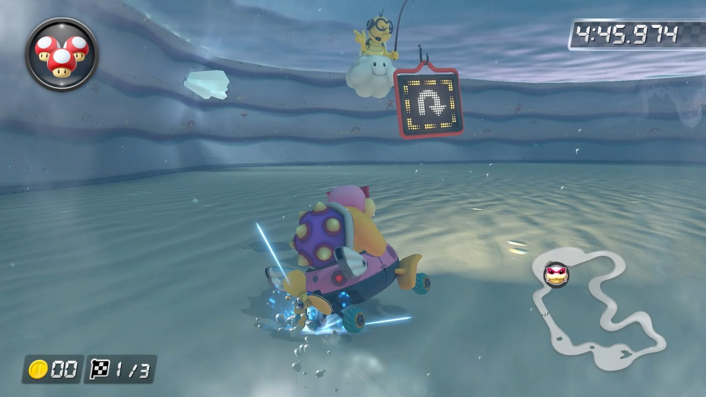
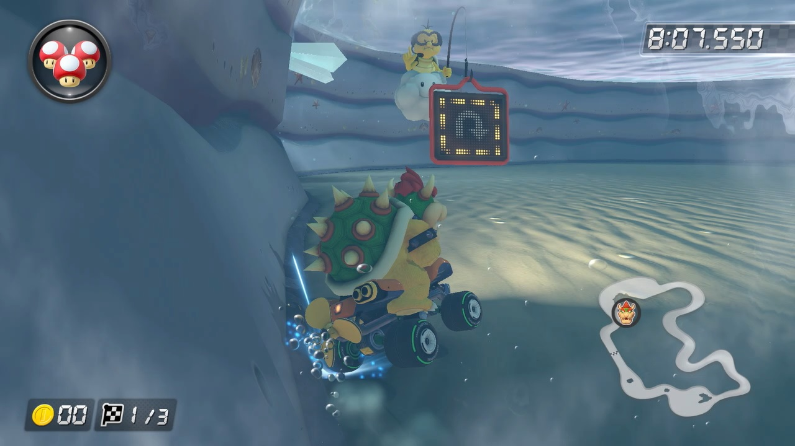
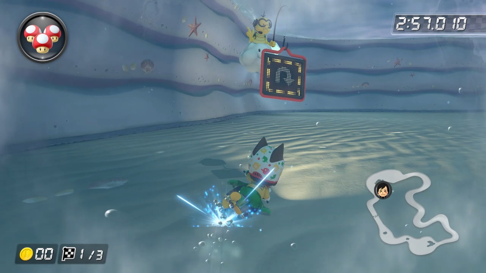
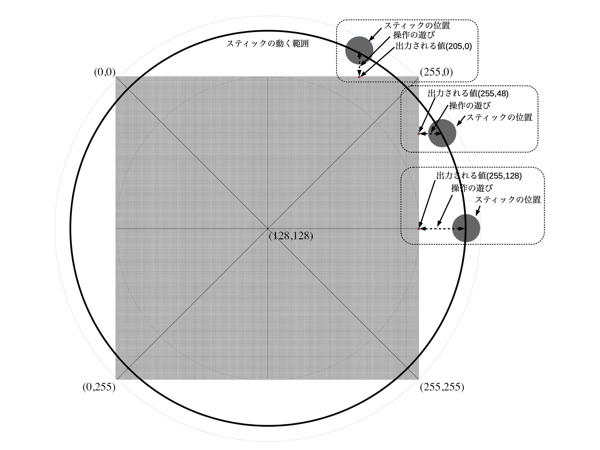
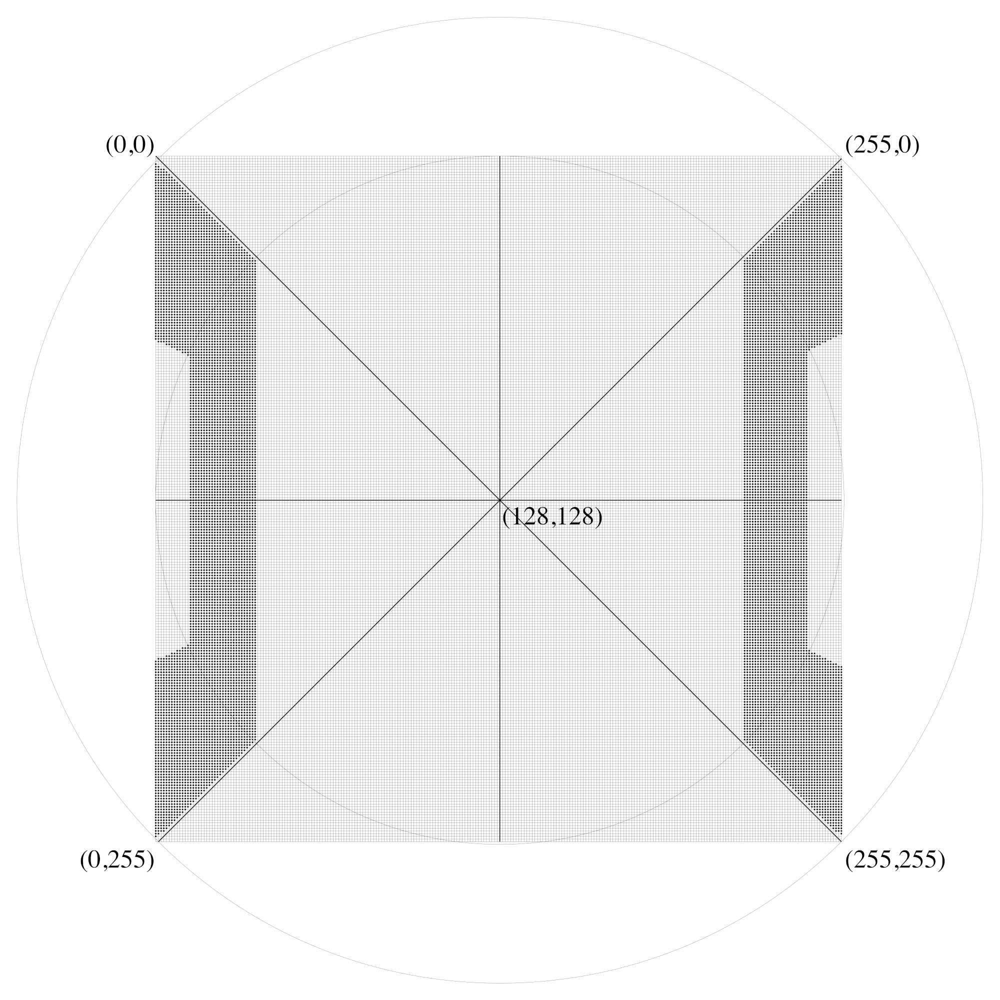
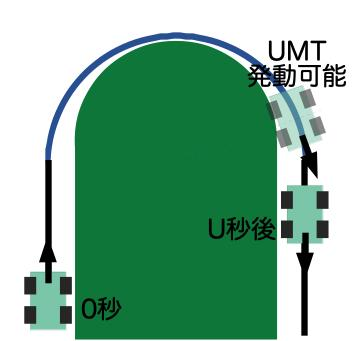

ソフトドリフトに関する調査
〜マリオカート8デラックス版〜
目次
はじめに
このページではマリオカート8デラックスでのソフトドリフトと呼ばれる技術について説明します。マリオカート8デラックス以外のマリオカートでも同様の技術は存在しますが、本ページではマリオカート8デラックスについてのみ説明を行います。 ソフトドリフトは斜め入力や早溜めとして知られている技術(の一部)をより一般的に定義したものです。比較的難易度は高めの技術かもしれないですが、自由に車体をコントロールするためには重要な技術だと思います。 ということで、ソフトドリフトに関して少し詳しく調査を行いましたのでその調査結果を説明します。
ミニターボ
マリオカート8デラックスではドリフトをしばらく行っているとドリフトを終了した時にミニターボと呼ばれるブーストが発動します。 (普通のコーナリングでもミニターボの発動は可能ですがあまり実用的ではないのでここでは説明しません。) ミニターボにはミニターボ(MT)、スーパーミニターボ(SMT)、ウルトラミニターボ(UMT)の三種類が存在し、MT、SMT、UMTの順でブーストの発動時間が長くなります。 以後、これら三種類のミニターボのことをミニターボと呼び、別々に扱う必要がある場合にはMT、SMT、UMTと呼ぶことにします。 また、ドリフト終了時にどのミニターボが発動するかは、ドリフト中の車体から発生する火花の色(MTなら青、SMTならオレンジ、UMTなら紫)で識別できます。
| MT発動なし | MT発動可能状態 | SMT発動可能状態 | UMT発動可能状態 |
|---|---|---|---|
ブーストカウンタ
Mario Kart 8 Deluxe in-game statisticsによると、どのブーストが発動するか決定するためにブーストカウンタと呼ばれる値が利用されているようです。 ブーストカウンタの値はドリフト開始時は0ですが、ドリフトを維持している間に増加していきます。 ドリフト中はブーストカウンタの大きさによって車体から発生する火花の色が変わっていきます。また、ドリフト終了時にはブーストカウンタの大きさによりMT、SMT、UMTのどれが発動するか決まります。
[MK8DX] ターボを溜めるによるとドリフト中のブーストカウンタの増加量は二段階あるようです。増加量はスティックをどの程度左右に倒しているかで変化します。調べてみたのですが、ブーストカウンタは映像フレームごとに5あるいは2増加するようになっているようです。時間で換算すると速く溜まる時間(増加量5の場合)と遅く溜まる時間(増加量2の場合)の時間差は2.5倍になります。
|
| 時間の流れ | → | → | → | → | → | → | → | → | → | → | → | → | → | → | → | → | → |
| 相対時刻 | 0.000秒 | 0.017秒 | 0.033秒 | 0.050秒 | … | 0.750秒 | 0.767秒 | 0.783秒 | … | 1.617秒 | 1.633秒 | 1.650秒 | … | 2.483秒 | 2.500秒 | 2.517秒 | … |
| 相対フレーム番号 | 0 | 1 | 2 | 3 | … | 45 | 46 | 47 | … | 97 | 98 | 99 | … | 149 | 150 | 151 | … |
| ブーストカウンタ | 0 | 5 | 10 | 15 | … | 225 | 230 | 235 | … | 485 | 490 | 495 | … | 745 | 750 | 755 | … |
| 発動ミニターボ | N/A | N/A | N/A | N/A | … | N/A | MT | MT | … | MT | SMT | SMT | … | SMT | UMT | UMT | … |
| ゲーム画面 | … |  |
… | … |  |
… |
ミニターボ性能
キャラクターやカート、タイヤ、グライダーの選択により利用する車体の性能は様々に異なるものとなります。その中にミニターボ性能というものが存在します。ミニターボ性能はミニターボが発動可能になるまでの時間やミニターボ発動時間、また発動中の速度に影響するものであり、マリオカート8デラックスでは非常に重要な性能となります。カートの選択画面で車体の性能の一部を表示することはできるのですが、残念ながらミニターボ性能をゲーム画面中で確認する方法はありません。そのため、ミニターボ性能を知るためにはゲーム外の情報を用いる必要があります。調べる方法は色々ありますが、キャラクタやカート等を選択していくだけで、ミニターボ性能をはじめ様々なパラメータを調べることができるMario Kart 8 Deluxe Builder 1.1などのページを使うのが簡単だと思います。
Luigi_Fan2's Mario Kart 8 Deluxe Stat ChartとMario Kart 8 Deluxe in-game statisticsによるとミニターボ性能とMT、SMT、UMTが発動可能となるブーストカウンタの閾値の関係とその結果から計算されたミニターボが発動可能になるまでの時間は以下の通りとなります。
|
|
|||||||||||||||||||||||||||||||||||||||||||||||||||||||||||||||||||||||||||||||||||||||||||||||||||||||||||||||||||||||||||||||||||||||||||||||||||||||||||||||||||||||||||||||||||||||||||||||||||||||||||||||||||||||||||||||||||||||||||||
例えばミニターボ性能が1.00のカスタム用いて、ブーストカウンタの増加量が2の状態でドリフトした場合を考えてみます。この場合、表よりUMTの閾値は900になることが分かります。ブーストカウンタはフレーム毎に2増加するので、ドリフトを始めてから450番目のフレームが表示されたときにブーストカウンタが900になりUMT閾値に到達します。1フレームが表示される時間は1÷60秒なので、450フレームが表示されるまでには450×(1÷60)秒かかります。計算結果は7.5秒となり、これがUMTを発動までに必要なドリフトの時間となります。
この表は参照先のページから得られた情報に基づいて作成しましたが、ミニターボ性能が4.75のカスタム(ロイ、パタテンテン、スカイローラー、かみひこうき)で実際に実験を行い時間を計測しました。わずかな誤差は見られたものの、その結果は上記の調査内容の通りと言えます。
|
| ドリフト開始時 | MT可能開始時 | SMT可能開始時 | UMT可能開始時 | |
| ゲーム画面 |  | |||
| フレーム数(実測値) | 0フレーム | 115フレーム | 245フレーム | 375フレーム |
| フレーム数(理論値) | 0フレーム | 115フレーム | 245フレーム | 375フレーム |
| 秒数(実測値) | 0.000秒 | 1.917秒 | 4.083秒 | 6.250秒 |
| 秒数(理論値) | 0.000秒 | 1.917秒 | 4.083秒 | 6.250秒 |
| ゲーム中の秒数 | 0.000秒 | 1.915秒 | 4.086秒 | 6.256秒 |


{kind=link}
{kind=link}
{kind=link}
{kind=link}
{kind=link}
{kind=link}
{kind=link}
{kind=link}
{kind=link}
{kind=link}
{kind=link}
{kind=link}
{kind=link}
{kind=link}
{kind=link}
{kind=link}
{kind=link}
{kind=link}
{kind=link}
{kind=link}
また、ミニターボ性能が1.00であるカスタム(クッパ、ノーマルATV、ゴールドタイヤ、ゴールドカイト)と、whoamiが普段利用しているミニターボ性能が4.50のカスタム(軽量Mii、ヨッシーバイク、リーフタイヤ、ゴールドカイト)でも時間を計測しました。わずかな誤差は見られたものの、その結果は上記の調査内容の通りと言えます。
| ドリフト開始時 | MT可能開始時 | SMT可能開始時 | UMT可能開始時 | |
| ゲーム画面 |  | |||
| フレーム数(実測値) | 0フレーム | 140フレーム | 295フレーム | 450フレーム |
| フレーム数(理論値) | 0フレーム | 140フレーム | 295フレーム | 450フレーム |
| 秒数(実測値) | 0.000秒 | 2.333秒 | 4.917秒 | 7.500秒 |
| 秒数(理論値) | 0.000秒 | 2.333秒 | 4.917秒 | 7.500秒 |
| ゲーム中の秒数 | 0.000秒 | 2.345秒 | 4.913秒 | 7.501秒 |
{kind=link}
{kind=link}
{kind=link}
{kind=link}
{kind=link}
{kind=link}
{kind=link}
{kind=link}
| ドリフト開始時 | MT可能開始時 | SMT可能開始時 | UMT可能開始時 | |
| ゲーム画面 |  |  |
||
| フレーム数(実測値) | 0フレーム | 118フレーム | 251フレーム | 383フレーム |
| フレーム数(理論値) | 0フレーム | 118フレーム | 250フレーム | 383フレーム |
| 秒数(実測値) | 0.000秒 | 1.967秒 | 4.183秒 | 6.383秒 |
| 秒数(理論値) | 0.000秒 | 1.958秒 | 4.167秒 | 6.375秒 |
| ゲーム中の秒数 | 0.000秒 | 1.961秒 | 4.178秒 | 6.375秒 |
{kind=link}
{kind=link}
{kind=link}
{kind=link}
{kind=link}
{kind=link}
{kind=link}
以上、発動するミニターボを決めるために利用されるブーストカウンタについて紹介しました。また、スティックをどの程度左右に倒しているかによってフレーム毎のブーストカウンタ増加量が2の場合と5の場合の二段階があることを説明しました。さらにMT、SMT、UMT発動に必要なブーストカウンタの閾値について説明しました。最後に、ミニターボ発動までに必要なドリフトの時間の計算方法についても説明し、例として三つの異なるカスタムで実験を行い計算結果が正しいことを示しました。
ソフトドリフト
それではソフトドリフトについて詳細に説明していきます。今後の説明を簡単にするために、まずはドリフトを以下の五つに分類しておきたいと思います。
|
本ページでは、この中でも特にソフトドリフトについて詳細に説明します。まずはソフトドリフトの定義を行い、その後ソフトドリフトのための操作方法について説明します。また、ハードドリフトとソフトドリフトの区別をどのようにするかの提案を行います。最後にソフトドリフト中の回転半径について考察します。
ソフトドリフトの定義
まずはソフトドリフトの定義についてです。明確な定義はないと思いますので、以下の二つを満たすドリフトをマリオカート8デラックスでのソフトドリフトと定義したいと思います。
- ハードドリフトとブーストカウンタの増加量が同じドリフト
- ハードドリフトよりも大きな回転半径で曲がるドリフト
ソフトドリフトとは、ハードドリフトと同様にブーストカウンタの増加量が5の状態を維持、要するにブーストカウンタが早く溜まる状態を維持しつつ、ハードドリフトより緩やかにコーナーを曲がるドリフトのことです。一つ目の条件は非常に分かりやすいかと思います。一方、二つ目はソフトドリフトとハードドリフトの境界を明確にするという条件であり、これはなかなか難しい問題となります。というのは、おそらく完璧な真横以外の入力では、たとえほんのごくわずかなズレであっても回転半径が大きくなってしまう可能性が高いからです。十字キーを用いているならともかく、アナログスティックでは寸分の狂いなく真横に倒すのは非常に困難であり、ハードドリフトを行うことは大変困難となります。
まずは、ハードドリフトとソフトドリフトを区別せずに一つ目の条件だけを考えます。そののち、ハードドリフトとソフトドリフトの境界である二つ目の条件について考えてみます。
コントローラの出力値
ここではUSBのコントローラを利用して調査を行いました。どのような操作を行えばハードドリフトやソフトドリフトを実現できるかを説明します。Bluetooth接続となるプロコンやジョイコンでは調査していませんが、A look at inner workings of Joycon and Nintendo Switchの通りだとすると同様の結果になると思われます。
まずは、USBコントローラからSwitchに送信されるアナログスティックの情報について簡単に説明します。アナログスティックの出力はアナログ値ですが、デジタル値としてSwitchに転送されます。この時、左右は0~255、上下も0~255の整数値で表されることになります。これら二つの値の組をコントローラが出力するアナログスティックの座標とします。ちなみに左上の座標は(0, 0)で右下が(255, 255)、中心は(128, 128)となります。下の図ではコントローラが出力可能な値を黒丸で表現したものとなります。
もちろん操作の遊びがありますので、スティックを倒し切らなくても最大値、最小値を出力することができます。例えば下図でスティックの位置が操作の遊びの範囲にある場合には、スティックから出力される座標は全て同じ(255,128)になります。
 |
アナログスティックの生成する値は非常に精度の高いものとなります。スティックに触っていない時にはスティックは完全に中心にあると考えたいのですが、振動や直前に倒したスティックの向き等に影響を受け微妙にアナログ値の出力が変化し中心がずれてしまう可能性があります。このような場合でも出力される座標が中心(128, 128)となるように、中心付近ではデッドゾーンと呼ばれる領域が設定されています。この範囲にスティックがある時には常にスティックが中心に存在すると認識される領域です。
ところで、デッドゾーンはどのように実現されているのでしょうか？ジョイコンやプロコンでは中心付近のみスティックの動作量と出力値が線形ではないように計算することで使っている人が違和感を感じないように実現されているのではないかと想像しています。より安価なコントローラではそのような処理はなされずに、X軸方向もY軸方向も全域に渡り中心付近にデッドゾーンを持つように実装されているのではないかと思います。
| 中心にデッドゾーンのあるコントローラ | 全域にデッドゾーンのあるコントローラ |
|---|---|
「スティックの補正」画面でアナログスティックを正確に右に倒しきり、そこで微妙に上下に操作した時に少し引っかかりがあるコントローラが存在すると思います。その場合にはX軸、Y軸の全域でデッドゾーンが実装されているコントローラであると考えられます。一方ジョイコンやプロコンでは非常に滑らかに動作することが確認できます。
ハードドリフトとソフトドリフトの条件
どのような操作を行えばハードドリフトやソフトドリフトを実践できるのでしょうか。 先ほど説明したコントローラの出力が取りうる座標の中でハードドリフトやソフトドリフトが実現できる組み合わせを全て探し出すことで、ハードドリフトやソフトドリフトを行うために必要なコントローラからの出力が明確になります。ということで、その座標を調査して図示しました。この図の中で黒丸で示した座標が出力されるようにスティックを倒せばブーストカウンタの増加量が5であるハードドリフトやソフトドリフトを実現できます。
例えば、真横に倒した場合、左コーナーは(0,128) ~ (37, 128)、右コーナーは(217, 128) ~ (255, 128)を出力するようにスティックを倒せばハードドリフトやソフトドリフトとなります。
ソフトドリフトはスティックを倒し切らずに途中で止めることで実現できますが、スティックを倒し切らずに途中で止めることは困難だと思います。そこで、左右から少し角度をつけて倒し切ることでソフトドリフトを実現することが一般的となります。上記の図をみると、そのための角度の最大はおよそ水平方向から45度ということが分かります。 この範囲に45度は含まれませんが、人間の手でそれほど精密なコントロールは不可能だと思うので45度と言って問題ないと思います。 もしも45度付近で45度ちょうどを出力するようなコントローラがあれば、45度が含まれない影響が分かるかもしれません。
たとえば、アナログスティックではなく十字キーを用いてコントロールするときには45度単位でしかコントロールできません。斜め45度はソフトドリフト可能な範囲に含まれないため、十字キーではソフトドリフトは不可能であり、ブーストカウンタを早く溜めるにはハードドリフトを行う必要があります。
どの方向にスティックを倒せば良いのかイメージが湧かないという方のために、ハードドリフトとソフトドリフトを実現するスティックの動作範囲を「スティックの補正」画面の動画として作成しました。ドリフト中はこの動画内のスティックの動作範囲内になるようにスティックを維持することでハードドリフトやソフトドリフト、つまりブーストカウンタの増加量が5となります。
| 左側 | 右側 |
|---|---|
ということで、はじめにでも述べた結論の通り境界の角度はおよそ45度となります。
ハードドリフトとソフトドリフトの区別
ハードドリフトもソフトドリフトもブーストカウンタの増加量を5の状態を維持して行うドリフトです。定義でも書いた通り、その違いはコーナリング中の回転半径です。では、ハードドリフトとソフトドリフトの境界はどこにあるのでしょうか？
非常に分かりやすい区別の方法としては、スティックを真横に倒した時のみ、すなわち左コーナーであれば(0,128)、右コーナーであれば(255,128)を出力するようにスティックを倒した時のみハードドリフトと呼ぶという方法が考えられます。しかし、アナログスティックを寸分の狂いなく真横に倒すのは非常に困難であり、ほとんどの人はハードドリフトは使っていないと言うことになりますのであまり現実的ではなさそうです。
そこで、ドリフト中の"音"の変化による区別を考えてみました。ただの考えですので「そういう考えもあるんだね」ぐらいのつもりで読んでいただければと思います。
ドリフト中の音
ドリフト中ですが、スティック入力をイン側に大きく行うとキュルキュルという音が鳴ります。これは左右それぞれ90%以上の大きさとなるように左右にスティックを倒すと鳴り始めます。例として右側に曲がる場合を考えてみます。右側に曲がる際のスティック入力の範囲は全体で(129,128)から(255,128)の127段階あります。この90%は127×0.9=114.3となります。これ以上の値となるという事なので音が鳴る範囲は128+114.3=242.3以上となる範囲であり、アナログスティックの座標は整数になってしまうため実際には(243, 128)から(255,128)となります。
| 音なし(242,128) | 音あり(243,128) |
|---|---|
ソフトドリフトのアナログスティックの座標
真横以外の角度については必要に応じて正規化を行いX軸への写像をとり、その値が90%以上になっているかで音が出るかどうか調べることができます。ということで、ドリフト中の"音"をハードドリフトとソフトドリフトの違いとして考えた場合に、ソフトドリフトを実現するコントローラの出力を図に示します。この図は先ほどの図からハードドリフトの範囲の黒丸を削除したものとなっています。
|  |
このソフトドリフトの範囲を「スティックの補正」画面の動画として作成しました。ドリフト中はこの動画内のスティックの動作範囲内になるようにスティックを維持することでキュルキュルという音はならないがブーストカウンタの増加量が5となるソフトドリフトとなります。
| 左側 | 右側 |
|---|---|
とはいえ、やはり境界は曖昧なので、自分がハードドリフトをしているつもりなら自分はハードドリフトしてると言い、ソフトドリフトをしているつもりならソフトドリフトしてると言い、どちらであるか気にしない場合にはハードドリフトかソフトドリフトをしてるなどと言えば良いのではないでしょうか...
ソフトドリフトと早溜め
一般的に「早溜め」として知られている技術があります。 これは、ブーストカウンタの増加量が5の状態を維持しながら真横ではなく斜めにスティックを倒しドリフト中の回転半径を大きくする技術となります。また、この時のスティック操作は「斜め入力」と呼ばれているようです。
要するに、「斜め入力」により「ソフトドリフト」を行うことで、ミニターボ発動可能となるまでの時間を犠牲にすることなく緩やかにコーナーを曲がるテクニックのことを「早溜め」と呼ぶようです。
ソフトドリフト中の回転半径
ハードドリフトとソフトドリフトを利用することで回転半径を変化させられますが、どの程度回転半径に違いが出るでしょうか？少し調査を行ったので参考にしてください。
調査はシャーベットランドの水中で行いました。ドリフト開始時の挙動を考えるのは難しかったため、UMTが発動可能な状態までドリフトを維持した状態で計測した回転半径となります。また、ドリフト中の速度はソフトドリフトとハードドリフト全ての場合で同じであるという前提で調べています。ということで、調査の条件をまとめると以下の通りとなります。
|
ここでは斜め入力については考慮せずに、真右へのスティック入力である(255,128)~(217,128)を維持した状態でドリフトを行い、その結果を表にまとめました。
表では一周するのにかかったフレーム数と時間の平均を記述してあります。また完全に右に倒した状態(255,128)との一周にかかる時間の比率も記述することで、回転半径の比として算出しました。また、ミニターボが発動可能となる時間までの車体の向きの変化についても算出しました。
|
| 種類 | X | Y | 斜め入力 | フレーム数 | 時間(秒) | 円周比 | Fs(MT) | 角度(MT) | Fs(SMT) | 角度(SMT) | Fs(UMT) | 角度(UMT) |
|---|---|---|---|---|---|---|---|---|---|---|---|---|
| H | 255 | 128 | 0 | 266.603 | 4.443 | 1 | 46 | 62.11 | 98 | 132.33 | 150 | 202.55 |
| H | 254 | 128 | 7.19 | 268.153 | 4.469 | 1.01 | 46 | 61.76 | 98 | 131.57 | 150 | 201.38 |
| H | 253 | 128 | 10.18 | 269.72 | 4.495 | 1.01 | 46 | 61.4 | 98 | 130.8 | 150 | 200.21 |
| H | 252 | 128 | 12.48 | 271.293 | 4.522 | 1.02 | 46 | 61.04 | 98 | 130.04 | 150 | 199.05 |
| H | 251 | 128 | 14.42 | 272.861 | 4.548 | 1.02 | 46 | 60.69 | 98 | 129.3 | 150 | 197.9 |
| H | 250 | 128 | 16.13 | 274.445 | 4.574 | 1.03 | 46 | 60.34 | 98 | 128.55 | 150 | 196.76 |
| H | 249 | 128 | 17.68 | 276.033 | 4.601 | 1.04 | 46 | 59.99 | 98 | 127.81 | 150 | 195.63 |
| H | 248 | 128 | 19.11 | 277.625 | 4.627 | 1.04 | 46 | 59.65 | 98 | 127.08 | 150 | 194.51 |
| H | 247 | 128 | 20.45 | 279.219 | 4.654 | 1.05 | 46 | 59.31 | 98 | 126.35 | 150 | 193.4 |
| H | 246 | 128 | 21.7 | 280.817 | 4.68 | 1.05 | 46 | 58.97 | 98 | 125.63 | 150 | 192.3 |
| H | 245 | 128 | 22.89 | 282.422 | 4.707 | 1.06 | 46 | 58.64 | 98 | 124.92 | 150 | 191.2 |
| H | 244 | 128 | 24.02 | 284.017 | 4.734 | 1.07 | 46 | 58.31 | 98 | 124.22 | 150 | 190.13 |
| H | 243 | 128 | 25.11 | 285.619 | 4.76 | 1.07 | 46 | 57.98 | 98 | 123.52 | 150 | 189.06 |
| S | 242 | 128 | 26.15 | 287.224 | 4.787 | 1.08 | 46 | 57.66 | 98 | 122.83 | 150 | 188.01 |
| S | 241 | 128 | 27.16 | 288.822 | 4.814 | 1.08 | 46 | 57.34 | 98 | 122.15 | 150 | 186.97 |
| S | 240 | 128 | 28.13 | 290.474 | 4.841 | 1.09 | 46 | 57.01 | 98 | 121.46 | 150 | 185.9 |
| S | 239 | 128 | 29.07 | 292.07 | 4.868 | 1.1 | 46 | 56.7 | 98 | 120.79 | 150 | 184.89 |
| S | 238 | 128 | 29.99 | 293.7 | 4.895 | 1.1 | 46 | 56.38 | 98 | 120.12 | 150 | 183.86 |
| S | 237 | 128 | 30.88 | 295.307 | 4.922 | 1.11 | 46 | 56.08 | 98 | 119.47 | 150 | 182.86 |
| S | 236 | 128 | 31.75 | 296.92 | 4.949 | 1.11 | 46 | 55.77 | 98 | 118.82 | 150 | 181.87 |
| S | 235 | 128 | 32.59 | 298.575 | 4.976 | 1.12 | 46 | 55.46 | 98 | 118.16 | 150 | 180.86 |
| S | 234 | 128 | 33.42 | 300.18 | 5.003 | 1.13 | 46 | 55.17 | 98 | 117.53 | 150 | 179.89 |
| S | 233 | 128 | 34.23 | 301.807 | 5.03 | 1.13 | 46 | 54.87 | 98 | 116.9 | 150 | 178.92 |
| S | 232 | 128 | 35.03 | 303.463 | 5.058 | 1.14 | 46 | 54.57 | 98 | 116.26 | 150 | 177.95 |
| S | 231 | 128 | 35.8 | 305.092 | 5.085 | 1.14 | 46 | 54.28 | 98 | 115.64 | 150 | 177 |
| S | 230 | 128 | 36.57 | 306.72 | 5.112 | 1.15 | 46 | 53.99 | 98 | 115.02 | 150 | 176.06 |
| S | 229 | 128 | 37.32 | 308.343 | 5.139 | 1.16 | 46 | 53.71 | 98 | 114.42 | 150 | 175.13 |
| S | 228 | 128 | 38.06 | 309.972 | 5.166 | 1.16 | 46 | 53.42 | 98 | 113.82 | 150 | 174.21 |
| S | 227 | 128 | 38.78 | 311.6 | 5.193 | 1.17 | 46 | 53.15 | 98 | 113.22 | 150 | 173.3 |
| S | 226 | 128 | 39.5 | 313.226 | 5.22 | 1.17 | 46 | 52.87 | 98 | 112.63 | 150 | 172.4 |
| S | 225 | 128 | 40.2 | 314.83 | 5.247 | 1.18 | 46 | 52.6 | 98 | 112.06 | 150 | 171.52 |
| S | 224 | 128 | 40.9 | 316.422 | 5.274 | 1.19 | 46 | 52.34 | 98 | 111.5 | 150 | 170.66 |
| S | 223 | 128 | 41.58 | 318.028 | 5.3 | 1.19 | 46 | 52.07 | 98 | 110.93 | 150 | 169.8 |
| S | 222 | 128 | 42.26 | 319.663 | 5.328 | 1.2 | 46 | 51.8 | 98 | 110.37 | 150 | 168.93 |
| S | 221 | 128 | 42.92 | 321.26 | 5.354 | 1.21 | 46 | 51.55 | 98 | 109.82 | 150 | 168.09 |
| S | 220 | 128 | 43.58 | 322.886 | 5.381 | 1.21 | 46 | 51.29 | 98 | 109.26 | 150 | 167.24 |
| S | 219 | 128 | 44.23 | 324.495 | 5.408 | 1.22 | 46 | 51.03 | 98 | 108.72 | 150 | 166.41 |
| 218 | 128 | 44.87 | 326.102 | 5.435 | 1.22 | 115 | 126.95 | 245 | 270.47 | 375 | 413.98 | |
| 217 | 128 | 45.51 | 327.713 | 5.462 | 1.23 | 115 | 126.33 | 245 | 269.14 | 375 | 411.95 |
早溜めのための斜め入力は30度と言われることもあるようです。しかし、30度と45度近くの入力による回転半径や車体の向きを比較すると無視できない程度の違いがあるのではないかと思えてきます。斜め入力を使いこなしている人に意見を聞いてみたいところです。
ソフトドリフトの活用
ここでは、ソフトドリフトを利用するとどのようなコーナリングが可能か少し考えてみたいと思います。実際にどのように走れば良いかという内容ではありませんので、鵜呑みにせずコーナリングの参考にしていただければと思います。
普通に左右にスティックを倒してドリフトで曲がろうとしても、ほとんどのコーナーでは曲がりすぎてしまうのではないでしょうか？仕方がないので外側にスティックを倒してカウンターを当てて曲がりすぎを修正する必要があります。このカウンターを当てている間はブーストカウンタの増加量が小さくなるため、ミニターボが発動可能になるまでの時間は少し長くなってしまいます。
ソフトドリフトを利用するとどうなるでしょうか？ソフトドリフトを利用すると回転半径が大きくなりコーナーでの曲がりすぎを少なくできます。うまくいけばハードドリフトとソフトドリフトを上手にコントロールすることで理想的なラインをトレースすることで、コーナーをより早く抜けることが可能かもしれません。さらに、カウンターを当てる量が減るためブーストカウンタの増加量が大きい状態を長時間維持でき、ミニターボの発動を早めに行うことが可能になります。また、ドリフトの時間を長くすることで一段上のミニターボを発動可能にもできます。さらに、回転半径は大きいけどブーストカウンタが閾値を超えるまでの時間は同じなので車体が内側に向きすぎるのを抑制することにもなります。
| ハードドリフトのみ | ハードドリフト+カウンタードリフト | ソフトドリフト弱 |
|---|---|---|
もちろんソフトドリフトを利用して一段上のミニターボを発動させることが常に有効かどうかは議論の余地がありそうです。例えば、ハードドリフトを利用するとラインを完全にトレースできるコーナーを考えてみます。ただし、このハードドリフトではSMTまでしか発動できないとします。ソフトドリフトを利用した場合、たとえUMTまで溜まられるとしてもどうしてもラインがアウトに膨らんでしまいます。その分コーナー全体を曲がるための時間がかかるため、たとえUMTを発動したとしてもその差を埋められない可能性が高いのではないかと思います。
| ハードドリフトのみ | ソフトドリフト強 | ソフトドリフト弱 |
|---|---|---|
ラインのトレースという点ではハードドリフトとソフトドリフト、また必要に応じてカウンタードリフトを組み合わせるのが有効だと思います。TAでは理想のラインだけで走れば良さそうですが、実際のレースではラインの撮り方によっては他の人が付けている防御アイテムを避けたり、アイテムボックスに早くたどり着くためにターボを早めに発動したり、無理やり一瞬だけ他の人の前に出て自分の防御アイテムをなすりつけたり、逆に相手の後ろに下がりながら攻撃を避けつつブーストカウンタをしっかり溜めておくなど、考えるべきことがたくさんありそうです。また、コーナーにイン側から入るかアウト側から入るか、イン側に抜けるかアウト側に抜けるか、またその時の車体の向きをどうするのかといったことも重要になりそうです。こういったノウハウは上手な人に聞くのが一番だとは思いますが、自分でも色々と考えてみるのは楽しいのではないかと思います。
| ハードドリフト +ソフトドリフト弱 |
ソフトドリフト弱 +ハードドリフト |
ソフトドリフト強 | ソフトドリフト弱 |
|---|---|---|---|
|  |
もちろん、コーナー中でのミニターボ発動や着地ドリフトの利用、ニュートラルドリフトでの走行などなど、他にも色々と考慮すべき点は多いと思います。もしもコーナリングについてあまり考えたことがないようであれば、ここで説明した内容を参考にソフトドリフトも含めた色々なコーナリングの方法を考えて試してみていただければと思います。
調査内容の詳細
ここでは調査内容の詳細について説明します。どのような調査を行ったか興味があればご一読ください。

まとめ
このページではマリオカート8デラックスにおけるソフトドリフトの定義と操作方法について説明しました。 また、斜め入力でソフトドリフトを実現するのが現実的であり、そのためのスティック入力の角度は45度未満であるということを説明しました。 さらにソフトドリフト中の回転半径と車体の向きに関する調査についての説明も行いました。
以上、ソフトドリフトを理解することでマリオカート8デラックスをより楽しんでいただければと思います！